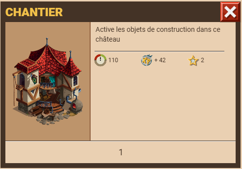
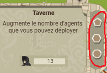

Il y a un nombre importnt d'objets, ceux-ci ayant des fonctions variées : militaire, prod, ordre publique... Chaque bâtiments possède trois emplacements pour des objets de construction :
Un emplacement principal, un emplacement d'aspect et un emplacement de relique.emplacement principal emplacement d'aspect emplacement de relique
Il y a plusieurs façon de classer les objets. Par exemple, certains objets sont disponibles pour la construction dès que lz chantier est construit, d'autres doivent être recherchés via la tour de recherche quand certains ne peuvent qu'être achetés dans les boutiques d'event ou chez le maître-forgeron. Objets militaires (tour de recherche) :